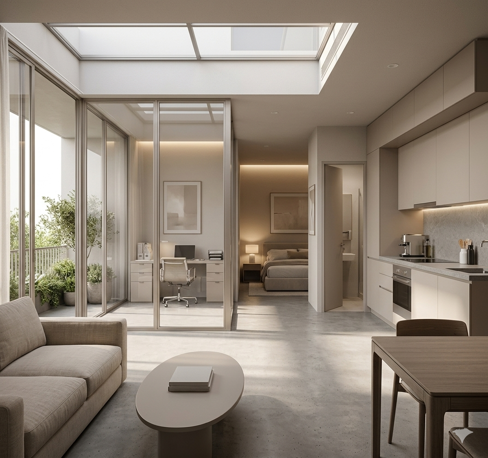
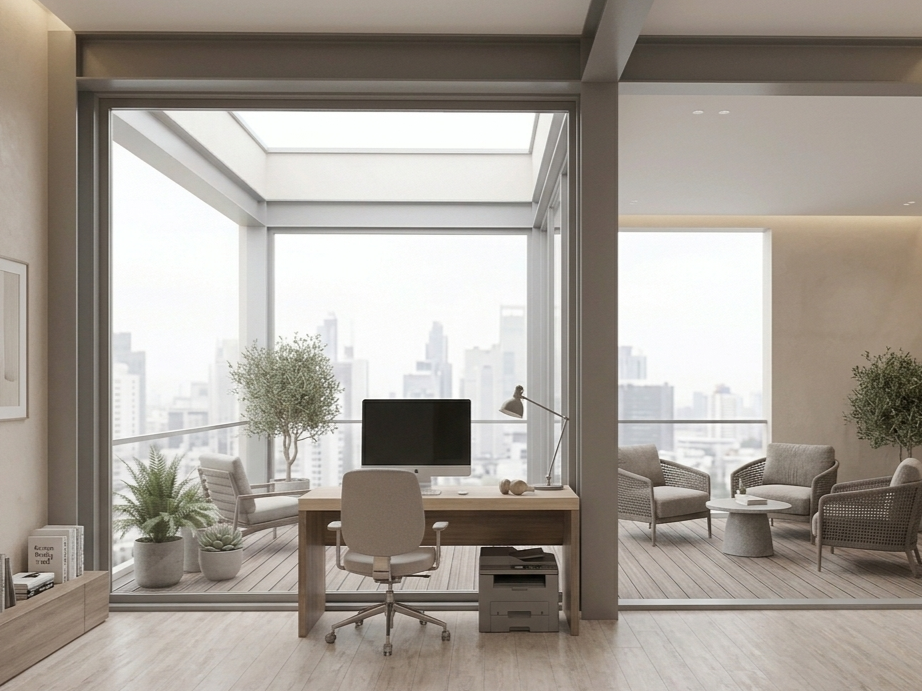
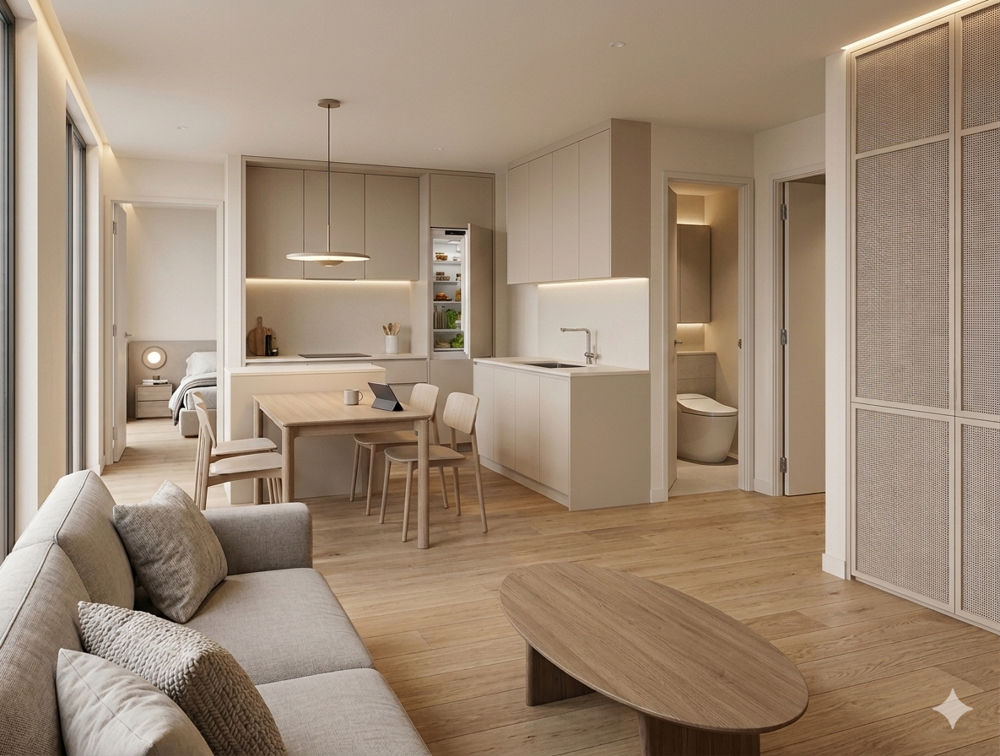

Choosing YOUR Lifestyle
A new housing system
for a new way of living.
Choose how you live. Build how you work.





三種居住工作單元
房型不再只是坪數分類，而是依照使用者的工作模式與生活型態生成。 每一種 unit 都對應一種新的城市居住需求。
Logi-Unit
為電商、自雇者與輕工業工作者設計。 入口鄰近工作區，配置倉儲、包裝、出貨與居住空間。
Media-Unit
為影像創作者、設計師與內容工作者設計。 結合工作室、拍攝、剪輯與彈性居住空間。
Focus-Unit
為工程師、研究者與遠端工作者設計。 強調安靜、採光、閱讀與長時間專注工作的環境。
Greater Taipei Network
Find Location
An interactive location layer for potential live-work housing sites across Taipei and New Taipei. Each marker can connect to future API data such as ownership, vacancy, transit access, and spatial capacity.
空間生成系統
設計不是從單一造型開始，而是從既有工廠結構、核心筒、廊道、庭院與房型規則之間的關係生成。
Structure Grid
以既有工廠結構為基礎，插入可調整的住宅網格系統。
Core System
分離住宅垂直動線與生產物流動線，形成雙核心配置。
Courtyard Corridor
透過中庭與環狀走廊，將採光、通風與公共性引入住宅內部。
Unit Rules
依照使用者需求，將不同房型植入網格並形成可複製的住宅產品。
關於這個提案
台北缺乏社宅與新型工宅，但城市中仍存在許多低度使用或閒置的工業空間。 本設計以北投片場作為示範基地，將舊有工廠的空間特徵轉化為一套可被複製的居住生產系統。